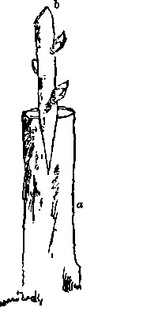

Geafting
Description
This section is from the book "Trees And Tree-Planting", by James S. Brisbin. Also available from Amazon: Trees and Tree Planting.
Geafting
The grafting methods have been long practised and are at present the most commonly used in propagating trees, especially fruit-bearing varieties. Though of old origin, yet they would seem to be not generally understood. They are, however, a necessary acquirement for persons interested in the production of variety, or in the preserving of a particular species.
There are three modes in common practice at present, the splice, cleft, and saddle graft, each approved and advocated upon its own particular merits.
The most preferable season for performing the operation is in spring, just as the buds begin to swell, and when the sap is in brisk motion, both for evergreens and deciduous trees. The selection of the scions should take plaice in the previous autumn, when the tree from which they are to be taken is in leaf, so as to insure the possession of the most vigorous shoots. These should be chosen from branches most exposed to the sun, and may consist of the last summer's growth, or, which is still more preferable, might be selected from among any shoots which may have sprung from the lower portion of the tree-stem. They are usually cut in lengths of three or four inches, so as to leave from three to five buds for the production of new shoots, and may be from one fourth to one inch in diameter, though they may be larger or smaller according to requirements. In ah cases they should be as nearly as possible on an equality of size with the stock or branch into which they are to be grafted, so as to admit of the bark of .both being exactly united, and to facilitate the flow of sap which forms the cementing substance between them.
The operation of splice-grafting is usually performed on seedlings, and when the scions are of about one half inch diameter, and consists of the stock being cut in an upward oblique direction, and the scion in a similar manner, so as to have the connection of these members as exact as possible. This being completed, the scion (a), or graft, is to be so fitted as to bring both or one of its barked edges in exact junction with the bark of the stock (5), where it is to be bound immovably with the most soft, tensive lashing at hand; after which, to exclude air and rain, around the outside, to above and below the points of union of the stock and scion, should be smeared grafting-wax or other compost.
In saddle-grafting the stock (a) is cut so as to bring its head to the form of a wedge, and the scion (b) at its lower end is similarly treated by being cut to the same angle, though in a reversed direction, so as to admit of its being placed upon the stock with its bark in exact contact with that of the stock. This method is employed when the scion is of moderate size. The necessary precaution of binding and protecting the graft is the same in this as in the foregoing.
Cleft-graftings is the simplest and easiest of execution, and a mode which is principally employed when the stock exceeds the graft in size. In the case of a seedling being the stock upon which to graft, it is cut square across, at the height of two or more feet from the surface of the ground, and a cleft made in its head into which a scion or graft (b), formed to the shape of a wedge of one or two inches in length, is inserted. The same operation of cutting back is also necessary on a branch being used as stock, but in both instances, if it is possible, the seedling or branch might be so accommodatingly cut as to bring the breadth of the graft and the width of the stock-head of equal dimensions, that the inside of the bark of each on both sides meets the other; but when, this union of the two edges cannot be conveniently made, then it is usual that two scions be inserted so as to perfect the juncture. It is not, however, advisable that more than one of the two remain, in case they both have united. The most healthy is generally retained, the other being sawed off close to the stock. The cleft in the stock being sufficient in itself to retain the graft firmly in its place, no other protective measures need be employed other than those necessary to exclude the air, protect exposed portions of the wood from the action of moisture, and the graft and stock from the encroachments of motive agencies. Of the many composites in use for grafting-wax, the following is given and recommended by Andrew S. Fuller, in his work on " Forest-Tree Culture:" The ingredients are beeswax, resin, and tallow, in the following proportions: One pound of tallow, two pounds of beeswax, and four pounds of resin melted together. If to be used in cool weather, a little more tallow may be added.
In splice and saddle grafting, if successful, the union of the graft with the stock will be accomplished at the end of the fourth month, about which time also the bandage may be loosened, so as to admit the air gradually, or until the scion has become accustomed to the change, when it may be entirely withdrawn.
Continue to:
- prev: Budding
- Table of Contents
- next: Pruning